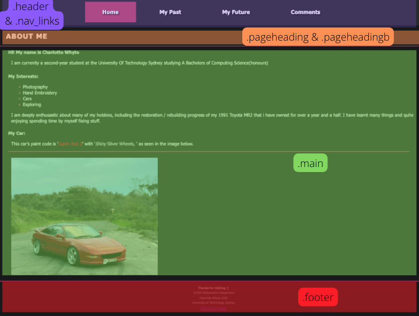
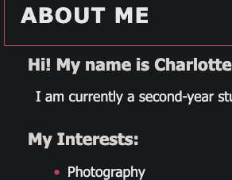
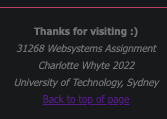
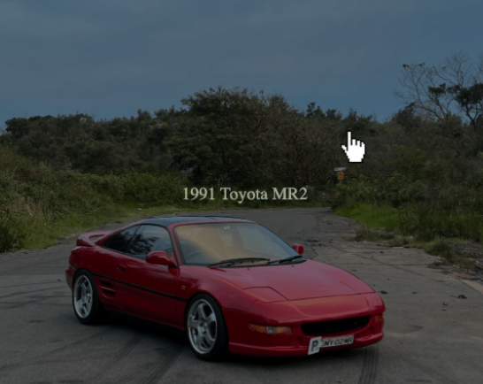
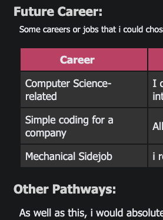
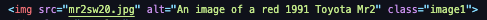
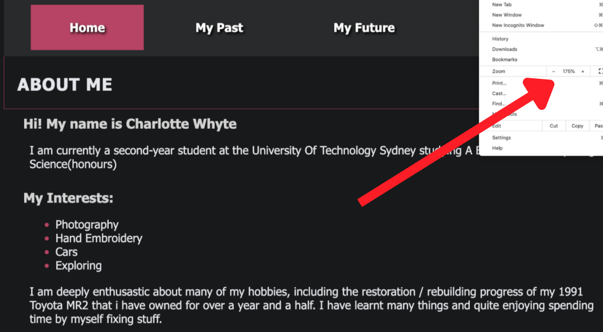

Comments Of My Webpage:

This page will discuss and address my entire webpage, including my own reasoning for why I have implemented
these elements.
The structure, seen in the image on the right, depicts the specific formatting of every webpage of my
website, which is a consistent aspect seen throughout.
By using the same structure and design for each webpage, I have successfully created a seamlessly
alluring and user-friendly, functional website. This website encompasses every requirement needed for
this assessment, as well as other aspects to make the website look and feel more appealing. .
This website was created using the code editor, ‘visual studio code,’ using 4 html pages and 1 CSS page.
I much preferred the layout of this editor rather than ed, as it was quite easy to learn.
Technical Aspects
The Structure of my Website

| '.nav_links' |
'.pageheading' |
'.main' |
'.footer' |
| The nav_links div (highlighted purple in the image to the
right)
contains the navigational
bar that has a fixed
position and is slightly
transparent. It follows the user down the page when
they scroll and changes to a pink to let you know what
page you're on, while also changing to a lighter pink when
you hover over it. This is made
with .current and :hover, and is a great aspect for user interactivity |
The .heading div (highlighted orange) is seen on every webpage
of this website. Each page
heading is formatted using the same div to provide consistency throughout. I have
implemented capital letters, 1px spacing between the letters and a margin of 20px, to make
the heading stand out more. |
The main body (highlighted green) consists of many different divs
to structure each webpage
with similar font,
formatting and consistency. The reason for so many varieties of divs is because spacing
often changes due to the application of lists, tables and images. I have created many divs
that are almost the same, such as “wrapper1-4.” Such a similar name reminds me of what the
div is used for, but also distinguishes where it goes. . |
The footer div (highlighted red) contains an “a” tag, that defines
the link back to the top
of the page. This
is done to make it easier for the viewers to get back to the top of the page, especially if
they are on a small device. It is formatted the exact same way on every page to create
consistency. |
The Structure each Webpage
| Index.html
|
The Index.html webpage of my website is the “Home” page. It contains the navigational bar
and heading that is seen consistently on every page. The body consists of an ordered list
that I have implemented pink bulletins to allow for the list to
stand out and be less bland.
This was done using a :before statement and changing the list-style. This page also includes
an image that is interactive through hovering, providing a description when the user hovers
over it.
|
| Past.html
|
The Past.html webpage is the second webpage of my website and is very simple and similar to
the index page. I have the same navbar, heading and ordered list with its pink bulletins, as
I wanted my website to be consistent with colour and design. I used the div “index_list” to
reference all the lists on this website, so that they exactly match each other with their
formatting and spacing. |
| Future.html
|
The Future.html webpage contains the normal aspects listed in the two webpages above, but
also has a new element. This webpage contains a table to provide a better insight on the
information I have provided about career opportunities. The use of this table is seamless
and suits the webpage, through the use of a pink “TH” for the
table heading. I have also set
the width to be 100% to keep the table a consistent size, with a margin on both left and
right to be 40px. |
| Comments.html
|
The Comments.html page is the page you are currently viewing. This webpage contains a great
scope of tables, lists and images, which are all neatly formatted. For the comment page to
not be too confusing, i have provided small specs of pink to
outline or divert the eye to
show the different elements. This current table has been created to look similiar to the
navigational bar so it matches. |
| Websystems.css
|
The Cascading Style Sheet (CSS) aspect contains all of the styling of my website. I have
ordered this as neatly as possible to organise which specific divs are used in each webpage,
accounting for the different styles seen. The CSS is a very important factor of this website
as it allows for me to implement my own designs that I believe look and feel nice for a user
to view and interact with. |
Navigational Bar
The navigation bar (nav_links) is comprised of many features that are beneficial for the style,
formatting and user interactivity of this website. For instance, this navbar is identical, no matter which
page you are
on, creating a sleek, clutter free visual effect effect while changing between each page. These features can
include .current, :Hover which change the colour of the current page to pink and
the page you hover
over to light pink. The width is also “100%” so that when the website is
zoomed in or seen on different
devices, it will remain the entire length of the webpage.
Margin and Padding

The margin and padding are used for aesthetics and for technical reasons within this webpage. Using
cascading style sheets, I have created a neat website whereby the margin scales inwards towards the centre
of the page, depending on the title and text. The implementation of a margin means there isn't text on the
border of the page and creates a pleasing design for the user. It allows for no text to be cut off from
being on the edge of the page, as well as formatting the images closer and further away from text.
Text Formatting
Similarly to the fundamental elements listed above, text formatting is thorougly important to be formatted
consistently. I have used separate divs for text to achieve correct spacing around, as text is placed
in many different areas. I have made sure to reference that the text is similar but with different
formatting by using specifics divs such as “smalltitle1, smalltitle2” and so on. This allows for me to
easily identify which text it is, but also allows for the text to be correctly formatted no matter its
surroundings.
To further format text and blocks of text, I have used pink lines,
“border-top” and “border-bottom,” to
separate aspects of my webpage. This element allows for text bodies to be separated and provides a clear
definition of headings. For instance, within the comments page (the page you are viewing) I have
implemented the pink line after every major text block, such as Technical,
Aesthetics and Accessibility.

Footer
I have implemented a footer to every webpage of this website, that is consistent and simple. It is quite
small but contains necessary information such as my own name and the assessment name. The important aspect
of this footer is the use of a “back to top” message that allows the user to jump straight back up to the
top of the page. This element is executed by using a “a href #top” that references back to the top of the
page using “a id=top.” This is a fundamental addition to my website as it allows users to quickly return to
the top of their current page, which could be difficult if they are on a small device. Above the footer,
there is another “border-top” line that indicates that the website is completed, as it spans the entire
width of the page. This technical aspects is quite important as it subtly lets the user know that the
webpage is finished.
Font
The use of a font-family is a very important technical aspect, as it is a fallback system for the browser.
If the browser does not support a certain font, it can fallback onto the next font listed in the
font-family. I have specifically chosen these five fonts and formatted them as shown: 'Segoe UI', Tahoma,
Geneva, Verdana,
sans-serif.
The use of this fallback system allows the website to look as similar to how the author intended for it to
be, as well as letting people use the website in almost any browser
Tables
I have included a table on the “future” webpage that I have styled using “style=width:100%’, allowing for
the table to encompass the full scope of the website, no matter the zoom percentage or size of screen that
the user is viewing it at. The importance of using a percentage rather than a set number of pixels is to
make sure the table is not cut off or dismantled when using different size devices or zooms. This table has
a designated border to clearly classify the information that is held within it. I have specified the heading
of the table by acknowledging “th” to change the background colour to pink, as
well as using
“text-align: center;”. The spacing is set using padding and margin so that the information contained within
is not cluttered but also doesn’t have too much white space. By using these elements, I have successfully
defined the table and its headings, which are clear for the user to read.

Images
The image included in the “Home” page has no border, to create a sleek design and look modern. This image
includes a “:hover”, that tells the user what the image is called. I have done this so that the user does
not get confused about what the image is, as it adds context. The text within the hover is aligned in the
middle of the image using text-align and vertical-align. The image is formatted with a .container and
.overlay, for the hover to line up. The entire image is formatted this way as it is a pleasant interactive
aspect for a viewer and fits my own aesthetic of the website.
Aesthetics
Colour
My website is designed in a sleek fashion to look appealing and clear to the reader. I have used a colour
scheme,(seen in the image to the right) that is very monochromatic with a pop of colour. This is seen using
different shades of greys and pinks. The use of such colours provides the user with a clear view of the
website, with two shades of pink to allow for certain aspects to stand out. This allows the webpage to not
being overbearing, which is often seen when there is either too much colour or no colour at all. This
minimalistic design is seen consistently throughout my entire website, which will be further mentioned. The
interactivity of adding small amounts of colour can greatly improve the viewers' sense of appeal and
engagement, rather than being plain.
Font
As previously mentioned in the technical aspects of this webpage, I have implemented the use of a
font-family for its utter importance as a fallback system if the font is not supported. I chose these
specific fonts as they are easy and clear to read, seen in the font-family of: 'Segoe UI', Tahoma, Geneva,
Verdana, sans-serif.
These fonts are coloured in an off-white colour, rgb(228,230,235), which is slightly darker than white. I
decided to use this colour as it was less harsh against the contrast of the background colour of #18191a.
Furhtermore, the dark background colour provides contrast towards everything else shown on the screen, which
I was contemplating leaving as white, but I felt it was too harsh on the eyes. This colour scheme took
awhile to decide, as I found a lot of colours clashed or were not sppealing to the eye.
Navigational bar
The navigational bar is designed to be large enough to view at the top of the page, as well as in its fixed
position. I have implemented the navigational bar to follow the user as they scroll down my page. This
provides convenience and is appealing to the eye as it is slightly transparent so does not block off text
behind it. This fixed position reflects quite a modern website, as it is very user friendly, no matter what
device is used. As well as this, the navigational bar changes colour for what page you are on. The pink, greatly stands out and is a very useful tool for the
user. I have added a :hover,
to this navigation bar so that if a user wants to change to a different webpage, it will highlight it in a
slightly lighter pink All these aspects
contribute to an appealing navigational
bar that is VERY user friendly, interactive and engaging.
Formatting

The page titles and body content are in descending order for size, as I have previously mentioned. The use
of margin spacing is a great aspect for the viewer as it is pleasing to the eye and makes headings much more
obvious, especially if they are the same colour. I have consistently used a “border-bottom” and “border-top”
to space out and make obvious the heading, footer as well as different tiles within this comment page. I
have coloured them pink for them to stand out and look flattering. I have used a
line that spreads across
the length of the page that indicated that the page is at the top or bottom, while I have used a 40px margin
for a line that is only separate bodies of text, as it is only a page break.
I have consistently adjusted
the spacing, including margins, padding and alignment for the website to be as aesthetically pleasing as
possible. This consistently makes each webpage perfectly aligned as you flick through them. without such
alignment. the webpage would look clunky and be distasteful to the eye.
Interactivity and Engagement
I have previously listed all of the interactivity factors within my webpage, within other headings of this
page. But i will further include them here. Interactivity is a great example implemented for the user, as it
provides connectred feel for the viewer and also looks very appealing. I have used interactivity in aspects
such as my navigational bar, images and footer. The engagement of these aspects is important for a user as
the website is not plain and simple, creating an appealing and seemless website.
Accessibility
I have followed the guidelines of the
W3C Web
Accessibility Initiative and applied them within my website. This is an important factor as it
allows for the website to be accessible to anyone
Alt Tags

Accessibility is a necessary aspect for website users, so I have implemented alt tags in every single image.
Alt tags describe the image and appear if the image fails to load on a users screen. Alt tags are very
important as it allows for screen-readers to describe the image to people who may be visually impaired. It
also allows for people to find the website by simply searching up the alt tags, which can provide activity
for a website owner. As well as this, in my first image I have provided a hover aspect which describes what
the image is. This can be appealing to a viewer as they might be unsure of what the image is.
Screen Size

To make the entire webpage thoroughly accessible to any on any device, with any screen size, I have used
size percentages for text, tables and more. This is so these elements are not a fixed size of pixels and
will adjust when the screen size adjusts, for instance on a phone. If this wasn’t implemented, then people
on smaller screens might find it hard to view the website as its proper format is not correct. Seen in the
image provided, I have shown that I have tested the sizing of my website within my browser by changing the
zoom. I have also tested my website on my iPhone which worked very well.
For accessibility on phones and devices with smaller screens, I have included a “back to top” link, that
scrolls the user back to the top of the page once interacted with. This can be an important aspect for
long webpages, as it may take a period of time to scroll through.
Text
I have also tested that the colours and colour scheme have a good amount of contrast and do not hurt the
viewer's eyes. This is seen through my use of light grey instead of bright white for the text. I have
also made sure that no text blurs into the background and that it all fits well together. This is
especially important for people with visual impairments such as colorblindness, so I have not included
blue and red, or even prime colours, conjunctively. I have tested this using "Color Blindness
Simulator" in order to be absolutely sure that my colours have not clashed. This is an important
aspect as some colours may not be noticeable for people with different visual impairments.
The use of indentation is seen consistently and is important for a user as it shows headings and
subheadings. Having a consistent use of margin and paddings, as well as font size and spacing is a
necessary aspect for viewers as it allows it to be easier for them to read and is attractive to the eye.
The font choice allows for accessibility for any browser as I have used a font-family which is a
fallback system, previously mentioned. These aspects keep the website consistent and user friendly.